Death Squad - INTENT
Original Post 2015 - Updated 2025
I had some requests for this video tape to find its way to a DVD.
My initial response was, as soon as the tapes are all gone I will think about it.
But with some energetic kindness from an enthusiast, I was given a transfer of it on DVD.
I still had to transfer it on my own though to get it into a usable format.
The DVD version has been out of print for a while.
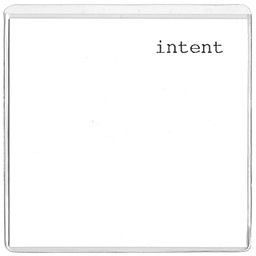
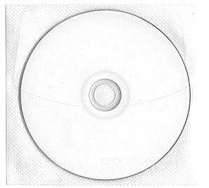
Images are here of all the items that came with the Intent VHS Box.
It contained 2 video pieces:
Intent at The Lab in San Francisco on June 25th 1999 and
Closing Statements video projection from July 26th 2000.
The only item that is missing is one of the many posts from the Einstürzende Neubauten List on Yahoo Groups
that I had printed out. I was going to provide all those responses and posts, but after careful deliberation i decided not to.
Here is a link to the list if the desire arises. That is the starting point, the rest is up to you.
(In 2020 Yahoo groups was shutdown)
I had read through all of them and it was after that when my decision was made.
Too much of the past to digest and revisit now. I did include the first post from back in '99.
Which seems to set the stage, so then I will not have to explain everything.
The material on the DVD is from one of the tapes which as of this writing is about 13-14 years old.
It would also be considered a second generation copy as I am not sure where the original masters are located.
The DVD version does include a postcard from each show, these are originals and would accomplish little
sitting at home on a shelf. So at least they can be utilised for something.
INTENT PERFORMANCE VIDEO ONLINE
On June 25th 1999 in San Francisco @ The Lab Death Squad performed Intent, also referred to as The Gun Show . It has been 20 years since that show and in remembrance of that event I decided to share the video online. It has been released on VHS originally in 2002 then on DVD-R in 2015.
Jason Campbell from Influencing Machine Records has written an essay in honor of the 20th anniversary.
“The Slow Moving Targets of Social Destruction”:
Reflecting on Death Squad’s “Intent” Performance 20 Years Later
Judged solely on the basis of aesthetic merit, an artist’s most controversial or notorious work is seldom the best he produces, but the effect of the piece often reverberates the most widely, extending beyond the artist’s usual audience, burrowing uncomfortably into the psyche of the outsider. Such is the case with Death Squad’s 1999 “Intent” performance. Assessed in the context of Death Squad’s complete catalog of live and recorded output, “Intent” would not necessarily mark the zenith. Nevertheless, owing to its uniquely visceral and confrontational nature, it remains one of the most storied live performances in the history of Industrial/Experimental art and music.
Michael Nine’s Death Squad performances always employed a multitude of media for a comprehensive, deeply unsettling sensory impact. Before every show, Michael created flyers featuring relevant imagery and text and passed them out to attendees to establish a context for the performance before it began. Video footage was an active visual focal point—often depicting the outer limits of human depravity and suffering juxtaposed with the saccharine banality of daily life—as Michael’s acutely abrasive music drowned out any audible connection to the world outside. Then there was Michael himself, his actions, antagonistic and unpredictable, obliterating the line between artist and spectator.
The “Intent” performance pushed these elements to their endpoints. The lone presentaion of the piece took place at The Lab in San Francisco, on June 25, 1999, long before the noxious concept of “safe spaces” took root, before words and ideas became fallaciously equated with physical violence, and just as the internet’s tentacles were beginning to fully permeate our daily lives. The flyer Michael prepared for the show foreshadowed its content. It featured three images (“Icons of Self Assimilation”) beneath each of which was a single descriptive word: a razor blade - “therapy”; a syringe - “recreation”; and a gun - “social kontrol.” Despite seeing the icons on the flyer, audience members surely had no idea the full extent of what was actually in store for them.
The video documentation of the performance was unplanned, at least by Michael. A member of TEST, which performed later that evening, decided to record the Death Squad set. For those of us not in attendance, the crude video recording is a vital and fortuitous document of a performance so extreme it would be nearly unbelievable if not for the fact it was captured on tape.
The recording begins in near darkness, blurry projections of static on two video screens offering the only light in the room. An unrelenting maelstrom of noise punctuated by occasional voice samples fills the empty space, creating a manic and claustrophobic environment from the outset. The rest of the room remains bathed in opaque black as the sound and visual imagery clash and collide.
After a few minutes, a sudden shift in mood occurs: the music abruptly changes, the barrage of noise receding, giving way to an obscure 1940s film recording of Harry Cool wistfully performing “Stardust.” Just below the projection screens a lamp suddenly illuminates the foreground of the room. Michael sits at a desk, flicking intently at a syringe before plunging it into his arm. Recreation. After a few unsuccessful strikes, he hits his target, removes the needle, and sits, limp and slumped forward, anguished, his head buried in his hands.
“My stardust memory, The memory of love’s refrain.” Encircled by dancers, the tuxedo-clad singer on the screen delivers the last lines of “Stardust,” and the warped sound of garbled tape suddenly whips through the room. Michael stirs, reaches for the revolver resting on the corner of the desk, methodically loads it, sets it back down, and then simply stares at the gun. Next, he grabs a razor and begins hacking away at his arms. The audience passively gawks as he slices his skin, repeatedly, insistently. Therapy. No one is moved to act as they witness a man wounding himself, blood dripping onto the desk where he sits. Rather than intervene, some members of the audience leave, disgusted at the sight of self-harm. One is reminded of the “smoke filled room” psychological experiment performed by Darley and Latané in the 1960s, which showed that people in groups, as opposed to singular individuals, are much slower to take action in the face of a crisis.
Given the trajectory of the performance up to that point, audience members likely believed Michael intended only to aim the loaded weapon at himself. Accustomed to the general comfort and relative safety of their existence, they sensed no peril to their own lives as they sat idly by, entertained, mere spectators of another man’s descent into self-inflicted ruination. Shrill, piercing sounds rip through the space, and the audience members’ comfort is swiftly shattered as Michael, gun in hand, frantically overturns the desk and lunges forth toward the stunned audience and outside the visual frame of the video footage. Notably, during the first part of the performance, the camera operator zooms in and out, reframing the shot to capture Michael’s actions. By the time of the chaotic final segment, however, the camera is motionless, suggesting the possibility that the operator deserted his post.
Most of the confrontation occurs off-screen, leaving to the viewer’s imagination precisely how the interactions between Michael and the audience played out. Although Michael is not visible on the video, one indirectly witnesses the effect of his actions as frightened and revolted viewers can be seen hurrying for the door, passing in front of the projector, a succession of images flickering across their anxious faces.
According to one of the unwitting participants in this drama—a woman who posted a long-winded complaint on the internet in the aftermath of the show—Michael “walked around where all the seats were and started putting the loaded gun against people's temples, including mine and my friend's. He would scream various things, most of which were unintelligible. But he always had the gun right up against someone's head.” Social Kontrol. As he pressed the gun into their faces, screaming at them, he cruelly stripped away their feelings of invincibility, in an instant revealing how terrifically fragile their comfort and safety actually was. “Last night was the first time that I actually feared for my own life,” the complaining woman confessed.
So potent was the impact of the performance that several audience members felt compelled to broadcast their displeasure via the primitive message groups that facilitated mass digital contact in the days before social media. Some urged violence or legal action against Michael, while a few others recognized and spoke up in support of the artistic merit of the performance. Scot Jenerik, who was present at the show, was among those who praised the Death Squad set, favorably comparing it to John Duncan’s 1976 piece, “Scare.” Despite the online clamoring, no action was taken against Michael or the venue in response to “Intent”; however, police were called to the 7Hz venue the day of Michael’s subsequent performance, “Enacted Hostage Sequence,” and violent threats were also directed at Death Squad and 7Hz prior to that show.
20 years later, it is clear that “Intent” was portentous. Just a few months prior to the performance, the shooting at Columbine irreparably damaged the nation’s collective sense of security. But what appeared then as a horrific aberration now occurs with predictable regularity. The hyper-brutality of contemporary life has cast its morbid shadow over all of us. Safety is illusory, a mirage, a collective hallucination. Self-annihilation through narcotic reverie and suicide are omnipresent features of our existence as we become increasingly atomized and existentially unmoored. The self at war with the outside world, under siege on all sides from monolithic social institutions, an unscrupulous media, and virulent social relations. Psychic combat metastasized as self-loathing, which is redirected in turn, radiating outward toward the other. Punishing the other until anesthetized and subdued, or simply executed.
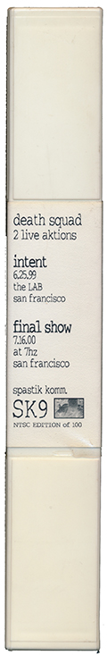
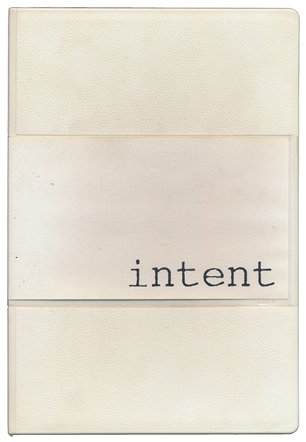
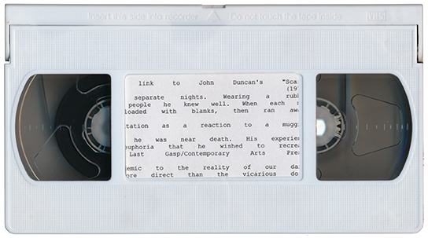
Insert card and photo.
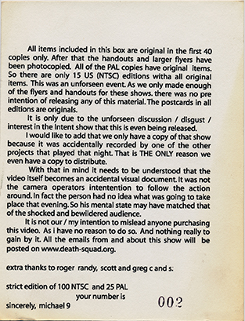
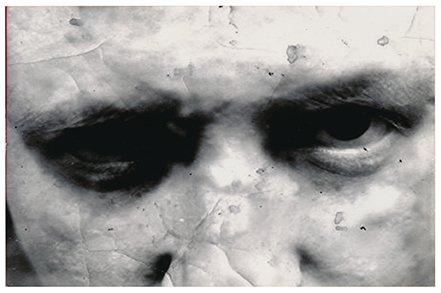
First posting on an internet forum, the morning after the show.
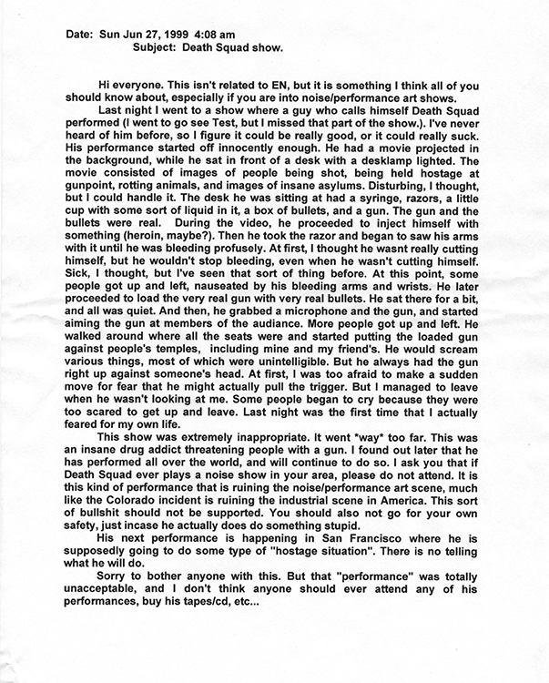
Promotional postcards for the event.
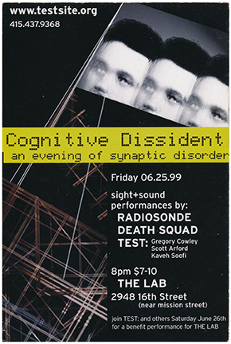
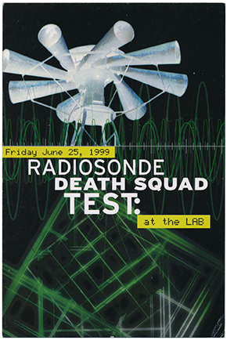
Handout for the Intent performance.
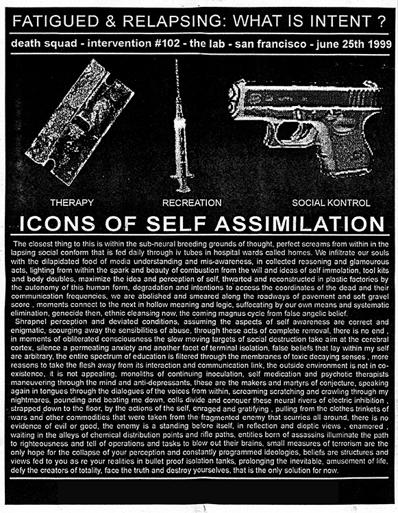